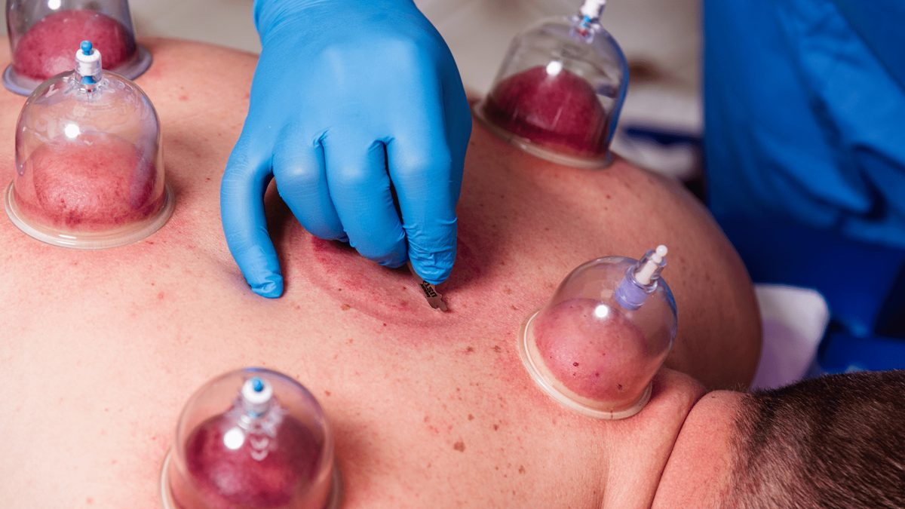

La hijama (cupping) à Casablanca | Bayt wikaya
Hijama sanguine, hijama sèche et hijama de la Sunna au centre Bayt wikaya — Al Fida, Qariaa, Casablanca

Qu'est-ce que la hijama ?
La hijama est une pratique traditionnelle connue depuis des siècles, qui consiste à poser des ventouses spéciales sur la peau pour créer une aspiration locale. C'est l'une des pratiques mentionnées dans la Sunna prophétique, et de nombreuses personnes y ont recours comme thérapie complémentaire pour favoriser une sensation de bien-être et de vitalité.
Au centre Bayt wikaya, la hijama est pratiquée par des praticiens spécialisés, dans le strict respect des normes d'hygiène et de sécurité. La hijama est une thérapie complémentaire qui ne remplace pas la consultation d'un médecin ni le traitement médical en cas de besoin.
Les types de hijama dans notre centre
🩸 Hijama sanguine
Les ventouses sont posées sur des points précis après de légères scarifications superficielles, ce qui permet d'extraire une petite quantité de sang. C'est le type le plus demandé au centre, pratiqué avec du matériel stérile à usage unique.
🍃 Hijama sèche
Ventouses par aspiration uniquement, sans extraction de sang, accompagnées d'un léger massage de détente. Un choix adapté aux personnes qui ne souhaitent pas la hijama sanguine ou pour qui elle ne convient pas.
✨ Forfait hijama complet
Une séance complète combinant un léger massage au pistolet de massage, puis la hijama sèche, puis la hijama sanguine, avec des ventouses en plastique médical réservées à un seul usage.
La hijama de la Sunna et ses jours
Selon la Sunna prophétique, la hijama se pratique les 17, 19 et 21 de chaque mois hégirien. Le centre Bayt wikaya veille à proposer la hijama durant ces jours recommandés, et rappelle ces dates à ses clients chaque mois.
Les dates de la hijama de la Sunna du mois en cours sur la page des horaires de la hijama →
L'hygiène et la sécurité d'abord
- •Des ventouses en plastique médical réservées à un seul usage, détruites après chaque séance.
- •Une désinfection stricte de la peau et du matériel avant et après chaque séance.
- •Un examen préliminaire avant la séance pour vérifier que la hijama convient à votre état.
- •Des conseils après la séance pour prendre soin des zones traitées et vous reposer.
Avant la séance : qui doit consulter d’abord ?
La hijama ne convient pas à tout le monde dans tous les cas. Si vous êtes enceinte, si vous prenez des médicaments anticoagulants, ou si vous souffrez d'une maladie chronique ou d'un trouble de la coagulation sanguine, consultez d'abord votre médecin avant de réserver une séance, et informez le praticien de votre état de santé complet lors de la réservation.
Vous cherchez un centre de hijama à Casablanca ? Bayt wikaya (Al Fida) propose la hijama sanguine, la hijama sèche et la hijama de la Sunna, ainsi que l'ostéopathie, avec du matériel stérile à usage unique. Réservation : 0664651301.
Questions fréquentes sur la hijama
Qu'est-ce que la hijama sanguine ?
Elle consiste à poser des ventouses sur des points précis du corps après de légères scarifications superficielles, ce qui permet d'extraire une petite quantité de sang. Elle est pratiquée dans notre centre avec du matériel stérile à usage unique.
Quelle est la différence entre la hijama sèche et la hijama sanguine ?
La hijama sèche repose uniquement sur l'aspiration par les ventouses, sans extraction de sang, et s'accompagne d'un léger massage. La hijama sanguine, quant à elle, comprend de légères scarifications superficielles et l'extraction d'une petite quantité de sang.
Quand ont lieu les jours de la hijama de la Sunna ?
Les 17, 19 et 21 de chaque mois hégirien. Vous trouverez les dates du mois en cours, mises à jour, sur la page des horaires de la hijama de la Sunna de notre site.
Les ventouses sont-elles stériles et à usage unique ?
Oui, nous utilisons des ventouses en plastique médical réservées à un seul usage, détruites après chaque séance, avec une désinfection stricte avant et après chaque séance.
Où se situe le centre Bayt wikaya ?
À Casablanca : Al Fida, Qariaa, rue 57 n° 46, derrière la pharmacie Al Anbar. Ouvert tous les jours de la semaine de 8:30 à 16:30, et le vendredi de 8:30 à 11:30.
Comment réserver une séance de hijama ?
En appelant le 0664651301 ou via WhatsApp depuis les boutons de réservation ci-dessous, ou depuis le bouton « Réservez votre rendez-vous » en haut de la page.
La hijama est-elle proposée à Casablanca ?
Oui, à Bayt wikaya, Al Fida, Casablanca.
Réservez une séance de hijama à Casablanca
Al Fida, Qariaa, rue 57 n° 46, derrière la pharmacie Al Anbar, Casablanca
Tous les jours de la semaine : 8:30 – 16:30 · Vendredi : 8:30 – 11:30